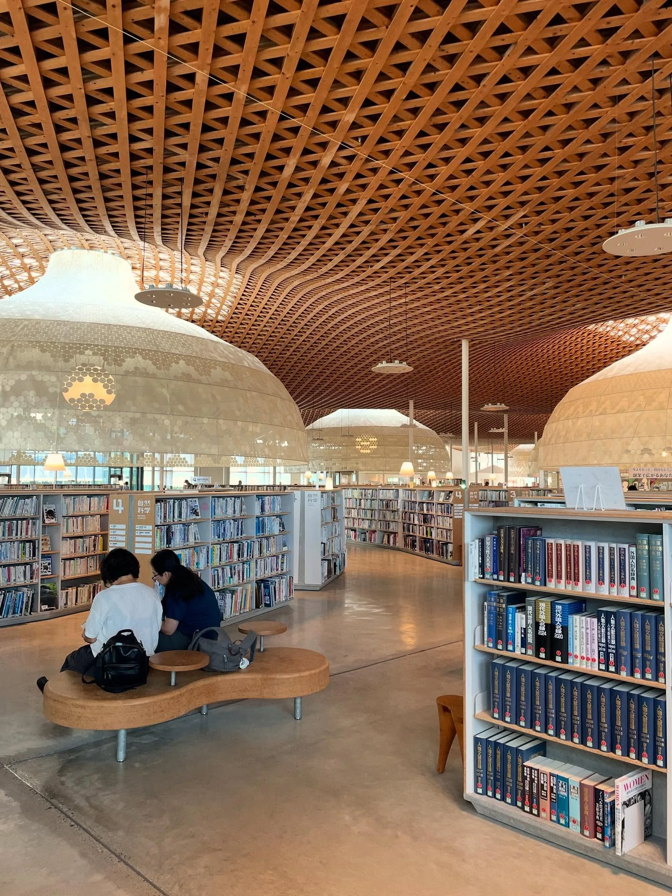
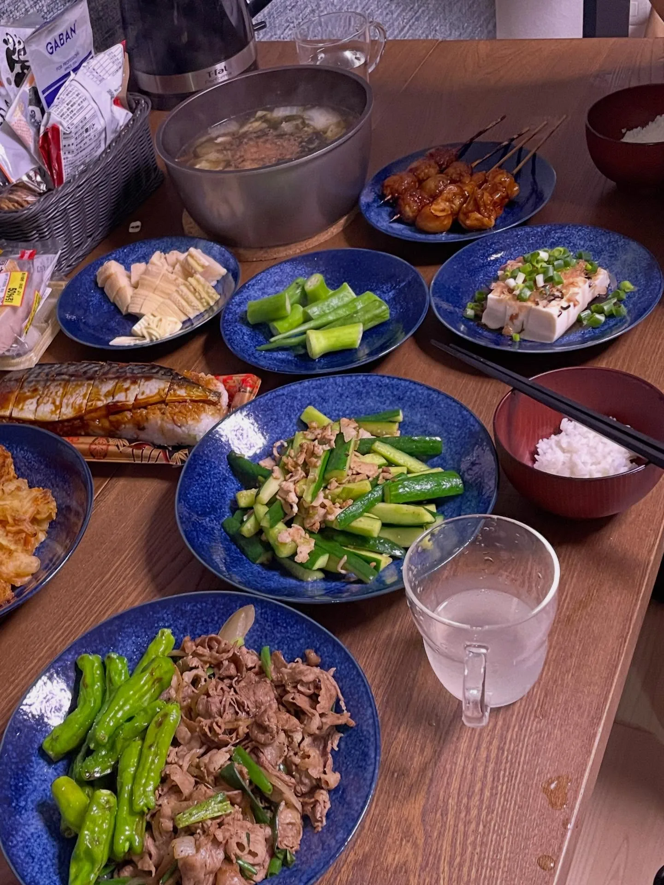
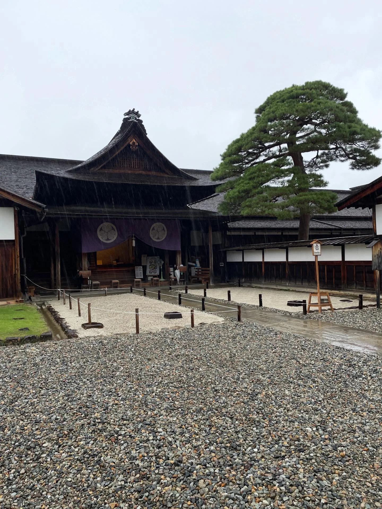
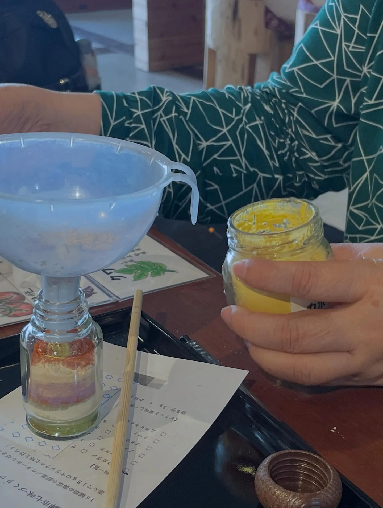
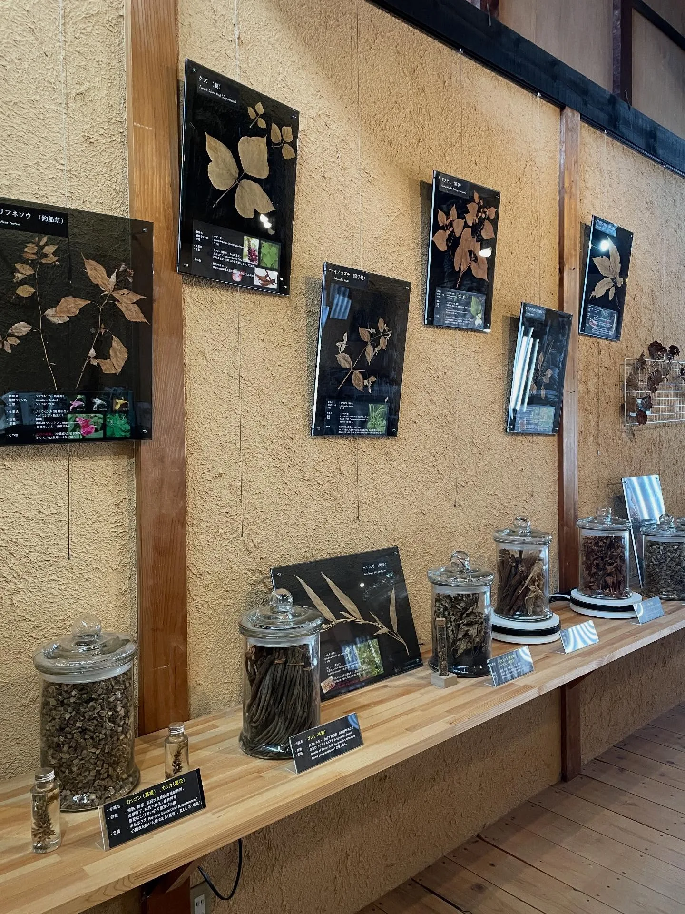
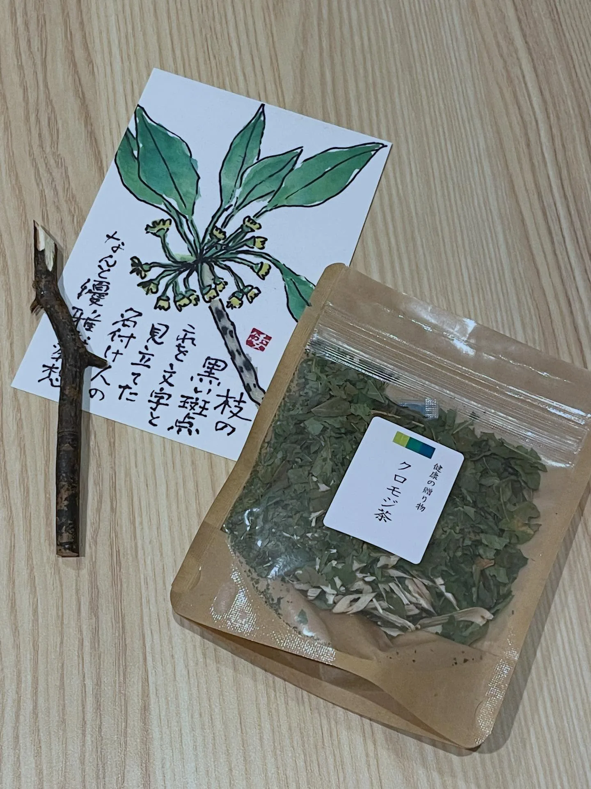
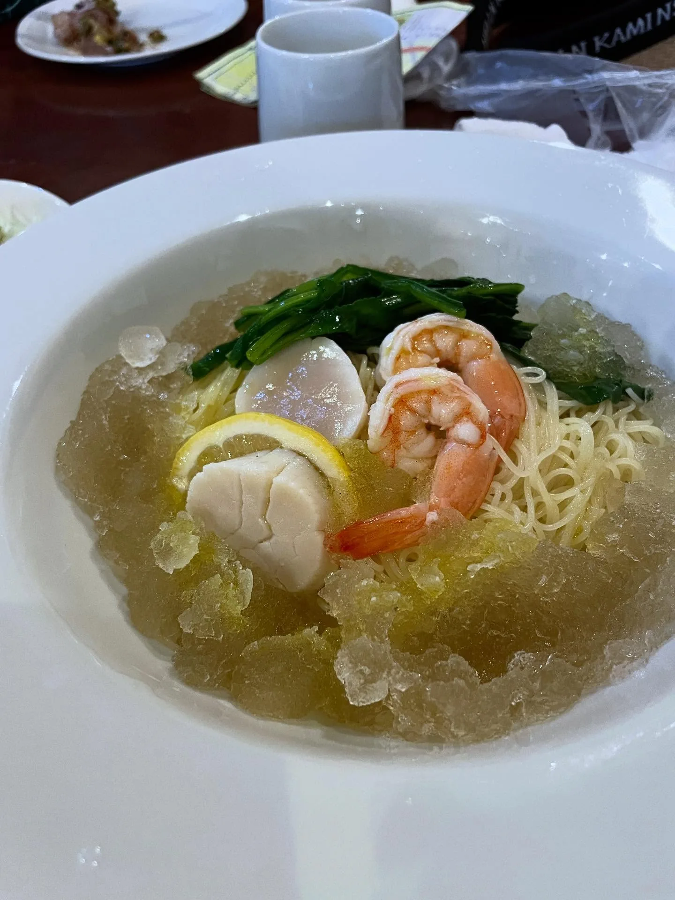
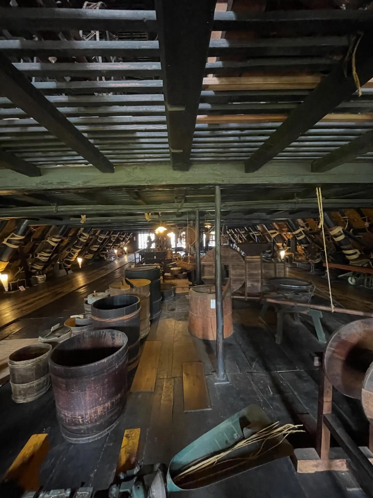

家庭旅行：岐阜 again！鵜飼、高山老街、蠟燭之夜與白川鄉
想不到家庭旅行又一次來到了岐阜，去了曾去過的高山、飛驒，也去了沒去過的岐阜城、鐘乳石洞，還看了鵜飼表演。這次用列景點的方式寫心得好了，大致上是依據旅遊時程的順序。
岐阜市：中央圖書館、岐阜城、鵜飼
岐阜市立中央圖書館
由伊東豊雄設計的複合式市民場域，很有設計感，很適合進來稍作休息（來這裡的真的是來休息的……午後真是太熱了……）。很失禮地覺得，天頂像蘑菇頭的頂罩，那個形狀、那個質感，就是外婆家餐桌上會出現的菜罩啊！！（獲得家人一致認同）

備忘
- 開放時間 09:00–20:00
岐阜城
纜車來回 1,300 日圓／人。眺望的景色很好，但城堡內部非常水泥化令我大失所望，我果然已經是現存天守那種木造城的俘虜了！上山可以搭纜車也可以走路，搭纜車之後也得再走個 10 分鐘，畢竟城堡建在山上，需要爬一點點山也是很合理的。
備忘
- 岐阜城因耐震工程關閉中，預計 2027 年 11 月再開放。
鵜飼
一種有著 1300 年歷史、利用鸕鶿來協助捕魚的捕撈技術。漁夫將鸕鶿的脖子上綁上繩索，當牠們潛進水裡吃到（大）魚時就會卡在喉嚨，藉由讓牠們吐出來取得漁獲……在河邊演示時，我忍不住想「真的沒問題嗎？」，不過事實上漁夫與鸕鶿生活非常緊密，會像我們養毛小孩那樣照顧牠們、知曉牠們的性格。不得不說，滿特別、新奇的。
這個文化表演活動是 5–10 月限定，長良川（靠岐阜城）及木曾川（靠犬山城）都有，費用是 3,500 日圓／人起，也可以代訂高級便當。流程是傍晚先在河邊介紹和演示，接著登船，在日落下悠閒享受零食晚餐，鸕鶿上場的時間只有最後約 15 分鐘，整個活動約 2 小時。
我們在週二的晚上參與，每艘觀賞船大約 20 多人，出動了 10 多艘船，聲勢頗為浩大；參與的遊客數比我想像中多（前往乘船點時並沒有覺得附近有很多旅客）。船隻在夜色中亮著燈籠、依序停泊在河邊準備看表演，有種《神隱少女》裡八百萬神搭船出現的感覺。一開始一個多小時的時間就是在船上悠閒吃晚餐聊天，總的來說滿值得也滿推薦的。
高山市：老街、陣屋與鐘乳石洞
高山老街｜推推！
雖然現在已不見高山城堡，但「城下町」，也就是現在的高山老街區域，是我覺得在日本看到保留最完整、區域廣（約三條街）、老房子利用率高、店家多元又好逛的，目前最喜歡的老街！
區域內有日本三大朝市之一的「宮川朝市」，不過臨河銷售蔬果的攤位數量不多，街上又混雜不少觀光賣店，跟我期待的「朝市」落差很大。如果要買新鮮蔬果，高山陣屋門口前的廣場也會有數個攤位可以採購。

高山陣屋
日本目前唯一留存下來的郡代、代官所，大致上就是行政機關＋長官宿舍。是少數可以走進去建築物裡面參觀的日式建築，不僅建築本身大，還在倉庫區域規畫了不小的展覽，停留兩個小時是有可能的！

備忘
- 高山陣屋：08:45–16:30，400 日圓／人
飛驒大鐘乳石洞
從高山車站出發近一小時車程。雖說洞內全年溫度 12 度，但參觀時一直在走路、爬高爬低的，甚至會流汗，搭一件薄外套就差不多了。這是我第一次參觀鐘乳石洞，覺得滿特別但沒有特別喜愛，我或許比較喜歡山林那種類型的自然景觀吧哈哈。
備忘
- 8:00–17:00（營業時間會依季節變動），1,100 日圓／人
飛驒市：飛驒古川
JR 飛驒古川站從高山車站出發，電車車程 17 分鐘。這裡是《你的名字》電影中重要的背景取材地，飛驒市也是嘉義新港鄉的姊妹市哦！
偶遇白壁キャンドルナイト
前往當天（9/6）剛好遇到地方大活動「白壁キャンドルナイト（Candle Night）」。這個蠟燭之夜，最初是另一個地點的「宮川親雪祭（みやがわ親雪まつり）」的活動之一，祭典在 2023 年、也是 30 週年時，因人力短缺、營運困難而決定停辦；接著 2024 年，蠟燭之夜被保留下來，並將活動地點改至飛驒古川，所以對這邊的居民來說算是很新的年度活動。我們是偶遇，感覺參與者主要是居民，大概也有至少三四百人，整體很溫馨！
午後有小市集和舞台表演，包含將傳統文化創新改編的演藝團體「半布里」，很吸睛，少年少女很專業也很帥氣；還有歌手 MUFFINS CREATION，雖然好像不有名／資料不多，但現場跟小朋友互動的感覺超棒。
晚上白壁土藏街的瀨戶川點滿了蠟燭，出動了一大群中學生點燈，還有居民的親子走秀活動也很可愛，氣氛非常舒服。
藥草店「飛驒森之惠」與蕪水亭 OHAKO
七月時，託民宿老闆工作需要場勘的福，我和其家人（？）展開了三天兩夜的飛驒金澤之旅，也來到了飛驒古川。
在飛驒古川車站附近，有一家因地方振興而營運的藥草店「飛驒森之惠」，可以買買奇怪植物藥草茶，而且有些是台灣沒有的植物，很值得也很適合嚐鮮！（店員先生也通一點英文）



附近的餐廳「蕪水亭 OHAKO」，則提供了限定的特製藥草入菜料理。據說不是常態供應、會更換菜色，不過九月這趟家庭旅行我再次前往，菜單和七月的一樣。
七月我點的是海鮮冷麵之類（忘了名字），送上來是一碗帶冰沙的麵，在場眾人都嚇一跳，不過很好吃，藥草味也很舒服，很推薦！

備忘
- 蕪水亭 OHAKO：11:00–16:00，無公休日
- 正餐 1,000–1,500 日圓，也有飲品點心
- 開車的話，所有人都會叫你停市役所停車場
白川村：白川鄉合掌村
從高山車站出發，巴士車程 50 分鐘。繼七月時去了同為因合掌村而一起被列為世界文化遺產的五箇山，終於也來了最有名的白川鄉！最喜歡的部分是在村子裡面走走看看拍拍、付錢參觀不同階層、規模的建築；反倒對於「白川鄉合掌造民居庭園」感覺普通，參觀時一直想到九族文化村！

小補充：在五箇山聽導覽時，有提到他們的合掌建築是可以租用（有開放出租）的，沒記錯的話租金是一萬日圓／月，雖然很便宜也很酷，但位處山間，生活機能沒有很好啦。
關鍵字岐阜岐阜市鵜飼高山高山老街飛驒飛驒古川白壁土藏街白川鄉合掌村你的名字藥草料理飛驒森之惠蕪水亭OHAKO
留言
電子郵件不會公開，只用來辨識留言者。第一次留言會先經過審核，之後同一個電子郵件的留言會直接顯示。本留言區以 Cloudflare Turnstile 防止垃圾留言。